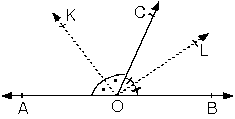

[AB ve [AC ışınları.
b. İç bölge (taralı alan)
c. Dış bölge

Geometride “Nokta”, “Doğru”, “Düzlem” gibi kavramlar tanımsız olarak kabul edilir.
1. Nokta: “.” biçiminde gösterilir. Boyutu yoktur.
2. Doğru: İki uçtan sınırsız noktalar kümesidir.
3. Düzlem: Her yönde sonsuza giden noktalar kümesidir.
E düzlemi dört yönde de sonsuza kadar gider.
| E düzlemi yandaki gibi gösterilir. |
4. Doğru Parçası : İki nokta ile bu iki nokta arasında kalan noktaların birleşimidir.
[AB] sembolüyle gösterilir.
[AB] ® AB doğru parçası
|AB| ® AB doğru parçasının uzunluğu
5. Işın : Bir başlangıç noktası olup sonsuza giden noktalar kümesidir.
[AB ® AB ışını
6. Yarı Doğru: [AB ışınından A noktasının çıkarılması ile elde edilen kümeye AB yarıdoğrusu denir.
]AB sembolüyle gösterilir.
Doğrusal nokta kümelerinin gösterimi
| [AB]: A ve B noktaları dahil. | |
| [AB[: A noktası dahil, B noktası dahil değil | |
| ]AB[: A ve B noktaları dahil değil |
AÇILAR
Başlangıç noktaları ortak iki ışının birleşimine açı denir.
şekilde [AC ve [AB ışınının oluşturduğu açı BAC açısıdır.
| [ABÈ[AC = BAC açısıdır.BAC, CAB olarak veya A ilegösterilir.[AB ve [AC ışınları açının kenarları, |
A noktası açının köşesidir.
Açı yazılırken açının köşesi olan nokta ortada yazılır.
1. Açının Ölçüsü
| [AB ile [AC arasındaki açıklığın ifadesine açının ölçüsüdenir. BAC açısının ölçüsü a dır.m(BAC) = a veya
m(A) = a olarak gösterilir. |
ölçüleri eşit olan açılara eş açılar denir.
2. Açının Düzlemde Ayırdığı Bölgeler
| Bir açı düzlemi üç bölgeye ayırır.a. Açının kendisi
[AB ve [AC ışınları. b. İç bölge (taralı alan) c. Dış bölge |
|
3. Açı ölçü birimleri
Açı ölçüsü birimi olarak genelde derece kullanılır. Dereceden başka Grad ve Radyan birimleri de kullanılır. Açı ölçüsü birimleri arasında,
360° = 400 G(grad) = 2p (radyan) eşitliği vardır.
Bir ışının başlangıç noktası etrafında bir tur döndürülmesi ile elde edilen açı 360° dir.
Derecenin alt birimleri
| 1° = 60' (dakika)1' = 60" (saniye)
1° = 3600" dir. 90° = 89° 59' 60" ve 180° = 179° 59' 60" olur. |
4. Ölçülerine göre açılar
| a. Ölçüsü 0° ile 90° arasında olan açılara dar açı denir. |
| b. Ölçüsü 90° olanaçılara dik açı denir |
| c. Ölçüsü 90° ile 180° arasında olan açılara geniş açı denir. |
| d. Ölçüsü 180° olan açılara doğru açı denir. |
| e. Ölçüsü 360° olan açıya tam açı denir. |
5. Komşu açılar
| Köşeleri ve birer ışınları ortak olan, iç bölgesi ortak olmayan açılara komşu açılar denir.CAD ile DAB komşu açılardır. |
6. Açıortay
| Açıyı iki eşit parçaya bölen ışına açıortay denir.[AD, CAB açısının açıortayıdır.
Açıortay üzerinde alınan her noktanın açının kollarına olan dik uzaklıkları eşittir. |
7. Tümler açı
| Ölçüleri toplamı 90° olan iki açıya tümler açılar denir.
a açısının tümlerinin ölçüsü (90° – a) dır. |
Komşu tümler iki açının açıortay doğruları arasındaki açının ülçüsü 45° dir.
| [OA] ^ [OB]m(KOL) = 45° |
8. Bütünler açı
| Ölçüleri toplamı 180° olan iki açıya bütünler açılar denir. |
| m(DAB)+m(CAD)=180° x+y=180° |
x açısının bütünlerinin ölçüsü (180° – x) dir.
Komşu bütünler iki açının açıortay doğruları arasındaki açının ölçüsü 90° dir.
|  | m(KOL) = 90° |
9. Ters Açılar
Kesişen iki doğrunun oluşturduğu açılardan komşu olmayanlara ters açılar denir.
m(x)=m(z) ve m(t)=m(y) dir. |
10. Paralel iki doğrunun bir kesenle yaptığı açılar
a. Yöndeş açılar
| d1 // d2 ise
|
m(a) = m(x) ; m(b) = m(y)
m(c) = m(z) ; m(d) = m(t)
b. İçters açılar
| d1 // d2 ise
a ile z ve b ile t içters açılarıdır.
m(a) = m(z); m(b) = m(t) |
Dışters açılar
| d1 // d2 ise
m(c)=m(x)=m(d)=m(y) |
d. Karşı durumlu açılar
| d1 // d2 ise
m(a) + m(t) = 180°; m(b) + m(z) = 180° |
Karşı durumlu açıların açıortayları arasındaki açının ölçüsü 90° dir.
| Paralel doğrular arasında birden fazla kesenin olduğu durumlarda kesişim noktalarından yeni paraleller çizilir. |
e. Birden fazla kesenli durumlar
| d1 // d2 iseB noktasından d1 ve d2doğrularına paralel çizersek m(ABC) = a + b olur. |
| B noktasından paralel çizersek m(ABD) + x = 180°m(DBC) + z = 180° buradan
x + y + z = 360° dir. |
f. Paralel doğrular arasındaki ardışık zıt yönlü açılar
| d1 // d2 ise a + b + c = x + y olur.Bu tür soruları kırılma noktalarından paraleller
çizerek de çözebiliriz. |
g. Kolları paralel ve kolları dik açılar
| Açıları oluşturan ışınlar aynı yönde ve paralel ise bu iki açının ölçüsü eşittir. | |
| Açıları oluşturan ışınlar zıt yönlü ve paralel ise bu iki açının ölçüsü eşittir. | |
| Açıları oluşturan ışınlardan biri aynı diğeri zıt yönlü ve paralel ise bu iki açının ölçüleri toplamı;a + b = 180° olur. | |
| Kenarları birbirine dik karşılıklı iki açının ölçüleri toplamıa + b = 180° olur. |  |
| Kenarları şekildeki gibi birbirine dik açıların ölçüleri eşittir. |